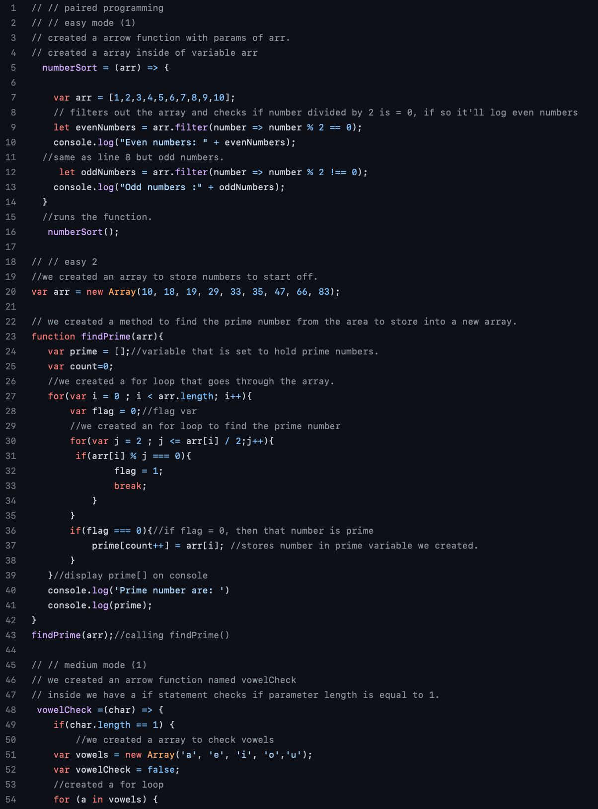

Pair Programming
I chose the pair programming assignment because it easily taught me the importance of teamwork and communication when solving problems. At first both my partner and I felt defeated looking through the questions and navigating how to come up with solutions. I remember both of us trying to describe how to manipulate arrays and loops, while slowly coming to an understanding.